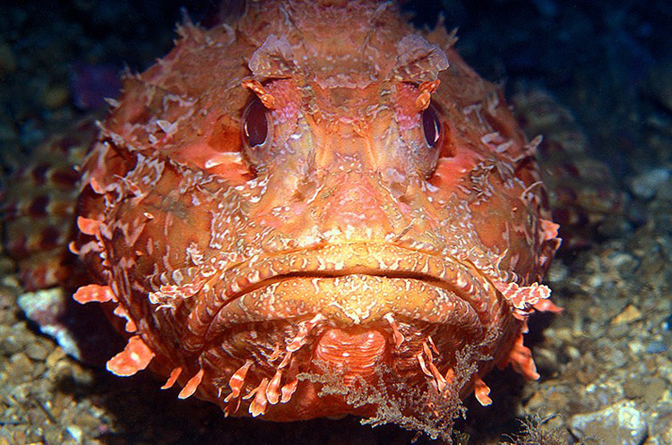

Скорпена

Скорпены — одни из самых опасных морских животных. Даже название этих рыб происходит от принятого в иностранных языках наименования «скорпионовая рыба», что указывает на сильную ядовитость. Несмотря на то, что скорпен нельзя назвать красивыми, в красочности и причудливости форм с ними мало кто может тягаться. Систематически к скорпенам относят несколько родов рыб из семейства скорпеновых отряда Скорпенообразных. К ним очень близки крылатки и шипощеки, более дальними родственниками скорпен являются бородавчатки, морские окуни, морские петухи и триглы. Скорпены — рыбы мелкого и среднего размера, длина большинства видов не превышает 30 см. Для них характерна большая голова и укороченное, резко сужающее к хвосту туловище. Сам хвост маленький и незаметный, а вот плавники большие, с сильно развитыми лучами. Спинной плавник разделен выемкой на две части: в передней 7-17 лучей превратились в острые колючки, в задней части такая колючка одна. Кроме того по одной колючке имеется в брюшных плавниках и по 2-3 в анальном. Каждая колючка имеет по две бороздки, по которым стекает слизь, выделяемая ядовитыми железами у основания колючки. Такой принцип строения немного напоминает устройство ядовитых зубов у змей. Помимо колючек у скорпен есть костная перемычка под глазом, защищающая голову, отчего этих рыб иногда называют панцирнощекими. На щеках у скорпен также есть короткие шипы, но они не ядовиты. Глаза у этих рыб выпуклые как у жаб и лягушек.